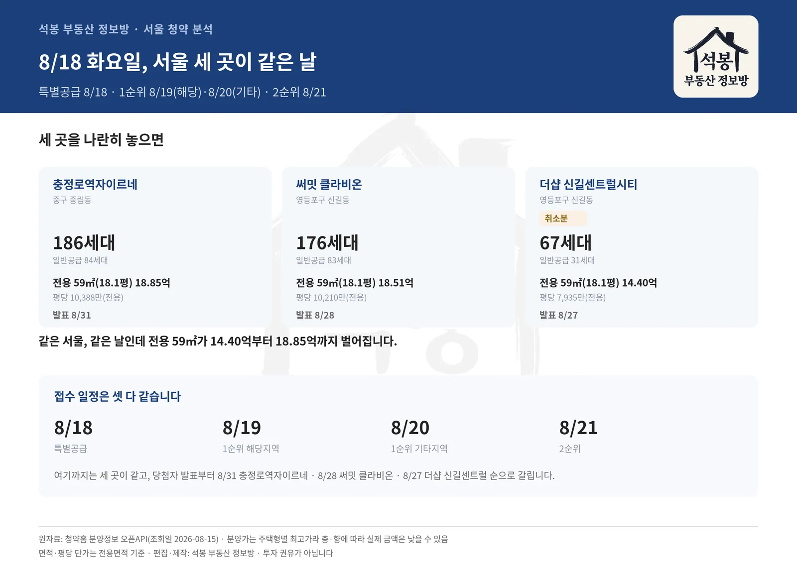
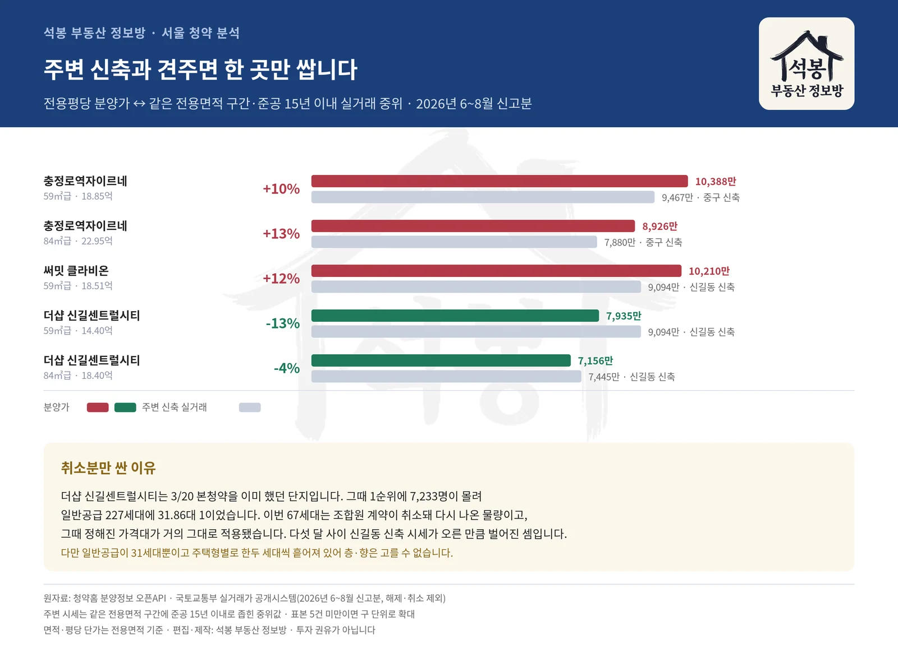
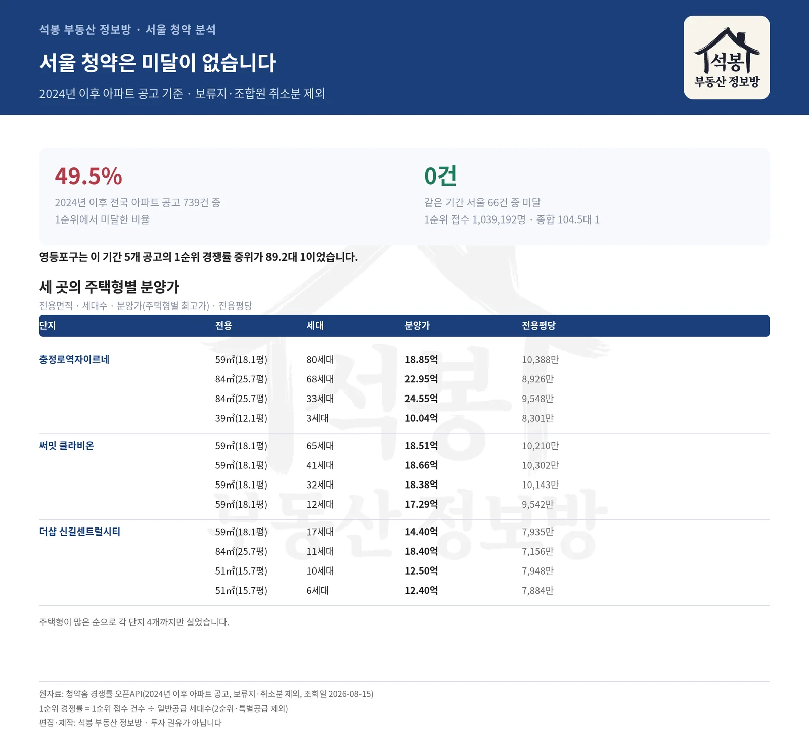

8월 18일 화요일, 서울에서 세 단지가 한꺼번에 특별공급을 받습니다. 충정로역자이르네(중구 중림동), 써밋 클라비온(영등포구 신길동), 더샵 신길센트럴시티 조합원 취소분(영등포구 신길동)입니다. 1순위는 서울에 사는 사람이 8월 19일, 그 밖의 지역이 8월 20일이고, 2순위가 8월 21일입니다. 세 곳 일정이 똑같습니다. 같은 날 같은 서울인데 전용 59㎡(18.1평) 값이 14억대와 18억대로 갈립니다. 왜 그런지, 그리고 주변 시세와 견주면 어느 쪽이 싼지 실거래로 확인해 봤습니다.
세 곳을 한 줄로 놓으면
자리부터 보면 중림동 충정로역자이르네는 5호선 충정로역 바로 옆 도심이고,
신길동 써밋클라비온과 신길 더샵은 신길뉴타운 안에 나란히 있습니다.
같은 날 열리지만 성격은 셋 다 다릅니다.
단지
세대
전용 59㎡대
분양가 전체 범위
당첨자 발표
충정로역자이르네 서울 중구 중림동 157-2 일원
186세대 일반 84
18.85억 전용평당 10,388만원
10.04억 ~ 24.55억
8월 31일
써밋 클라비온 서울 영등포구 신길동 3590 일원
176세대 일반 83
18.51억 전용평당 10,210만원
13.04억 ~ 18.66억
8월 28일
더샵 신길센트럴시티(조합원 취소분) 서울 영등포구 신길동 413-8 일원
67세대 일반 31
14.40억 전용평당 7,935만원
11.80억 ~ 18.40억
8월 27일

세 곳 일정·규모 비교
충정로역자이르네는 중림동 서울역 서쪽, 5호선 충정로역 일대입니다. 186세대 중 일반공급이 84세대로 특별공급이 더 많습니다. 전용 59㎡(18.1평)가 18.85억, 84㎡(25.7평)가 22.95억까지 올라갑니다.
써밋 클라비온은 신길동 신길뉴타운 안입니다. 176세대 전 주택형이 전용 44㎡(13.5평)에서 59㎡(18.1평) 사이 소형이고, 그중 59㎡(18.1평)가 150세대로 대부분입니다. 84㎡대는 없습니다.
더샵 신길센트럴시티는 사정이 조금 다릅니다. 지난 3월 20일 본청약을 이미 했던 단지이고, 이번에 나오는 67세대는 조합원 계약이 취소되면서 다시 나온 물량입니다. 당시 1순위에 7,233명이 몰려 일반공급 227세대에 31.86대 1이었습니다.
여기서부터는 회원에게 보여드립니다
카카오 로그인 3초면 전문을 읽을 수 있습니다. 무료입니다.
가입하시면 지역 시장조사 보고서(약식)를 2회 무료로 요청하실 수 있습니다.
이미 회원이면 같은 버튼으로 로그인만 됩니다
주변 시세와 견주면 한 곳만 쌉니다
분양가가 비싼지 싼지는 숫자만 봐서는 알 수 없습니다. 같은 동네에서 같은 크기의 비슷한 연식 아파트가 실제로 얼마에 팔렸는지와 나란히 놓아야 합니다. 아래는 2026년 6~8월 신고분 실거래 가운데 전용면적 구간을 맞추고 준공 15년 이내로 좁혀 비교한 값입니다.
단지
주택형
분양가 전용평당
주변 신축 전용평당
차이
충정로역자이르네
59㎡급 18.85억
10,388만원
9,467만원 중구 신축 6건
+10%
충정로역자이르네
84㎡급 22.95억
8,926만원
7,880만원 중구 신축 6건
+13%
써밋 클라비온
59㎡급 18.51억
10,210만원
9,094만원 신길동 신축 19건
+12%
더샵 신길센트럴시티 취소분
59㎡급 14.40억
7,935만원
9,094만원 신길동 신축 19건
-13%
더샵 신길센트럴시티 취소분
84㎡급 18.40억
7,156만원
7,445만원 신길동 신축 18건
-4%

주변 신축 대비 분양가
충정로역자이르네는 59㎡(18.1평)가 주변 신축보다 +10%, 84㎡(25.7평)는 +13% 높습니다. 써밋 클라비온도 +12%입니다. 두 곳 다 인근에서 거래되는 신축 값보다 비쌉니다. 다만 중림동은 이 면적대 실거래가 한 건뿐이라 중구 전체로 넓혀서 비교했습니다.
반대로 더샵 신길센트럴시티 취소분은 59㎡(18.1평)가 -13%, 84㎡(25.7평)가 -4%로 주변보다 낮습니다. 3월 20일 본청약 때 정해진 가격대가 거의 그대로 적용됐기 때문입니다. 다섯 달 사이 신길동 신축 시세가 오른 만큼 차이가 벌어진 셈입니다.
다만 취소분은 세대가 적습니다. 67세대 중 일반공급이 31세대이고, 주택형별로는 한두 세대씩 흩어져 있습니다. 층과 향은 고를 수 없고 남은 것을 받는 구조입니다. 표에 쓴 분양가는 주택형별 최고가라 실제 계약 금액은 이보다 낮을 수 있습니다.
서울 청약은 미달이 없습니다
전국으로 넓히면 사정이 정반대입니다. 2024년 이후 나온 아파트 공고 739건 중 49.5%가 1순위에서 미달했습니다. 절반입니다. 그런데 같은 기간 서울 66건 중 미달은 0건입니다. 1순위 접수 1,039,192명이 9,945세대에 몰려 종합 104.5대 1이었습니다.
영등포구만 따로 보면 이 기간 5개 공고의 1순위 경쟁률 중위가 89.2대 1입니다. 이번 세 곳도 미달을 걱정할 자리는 아닙니다. 관심사는 "되느냐"보다 "얼마에 받느냐"에 가깝습니다.
1순위 경쟁률은 이렇게 셉니다
1순위 접수 건수 ÷ 일반공급 세대수입니다. 2순위와 특별공급은 빼고 셉니다. 경쟁률이 1대 1을 밑돌면 1순위에서 미달이라는 뜻입니다.

서울 청약 맥락·주택형별 분양가
일정만 정리하면
구분
날짜
내용
특별공급
8월 18일(화)
신혼·생애최초·다자녀 등
1순위 해당지역
8월 19일(수)
서울에 사는 분
1순위 기타지역
8월 20일(목)
서울 밖에 사는 분
2순위
8월 21일(금)
접수 마지막 날
여기까지는 세 곳이 똑같고, 당첨자 발표부터 갈립니다. 8월 27일 더샵 신길센트럴시티 취소분, 8월 28일 써밋 클라비온, 8월 31일 충정로역자이르네 순입니다. 계약은 발표 열흘에서 보름쯤 뒤에 사흘간 진행됩니다(9월 7일·9월 8일·9월 15일 시작). 청약 일정은 우리 사이트 청약 페이지에서도 매일 갱신됩니다.
세 곳 모두 투기과열지구·조정대상지역에 있습니다. 재당첨 제한과 전매제한이 붙고, 자금조달계획서도 내야 합니다. 분양가상한제 적용 단지는 아닙니다. 청약 전에 본인 조건을 공고문에서 꼭 확인하십시오.
개인적인 생각을 덧붙이면, 세 곳 중 값으로만 보면 취소분이 유리해 보입니다. 다만 세대가 적고 층·향을 고를 수 없다는 점, 그리고 본청약 때 이미 31.86대 1이 나왔던 곳이라는 점을 함께 놓고 보셔야 합니다. 판단은 각자의 몫이고, 저는 숫자를 정리해 드리는 데까지입니다.
원자료: 청약홈 분양정보·경쟁률 오픈API(공고번호 2026000358·2026000364·2026000374, 조회일 2026-08-15) · 국토교통부 실거래가 공개시스템(2026년 6~8월 신고분, 해제·취소 제외)
분양가는 주택형별 최고 분양가이며 층·향에 따라 실제 금액은 낮을 수 있습니다 · 단가는 전용면적 기준 평당 · 주변 시세는 같은 전용면적 구간에 준공 15년 이내로 좁힌 중위값, 표본 5건 미만이면 구 단위로 넓혔습니다
편집·제작: 석봉 부동산 정보방 · 투자 권유가 아닙니다.